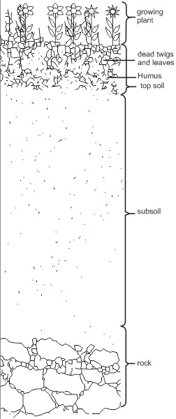

3. Agricultural Activities and
their effect on Ecological
System.
4. Agricultural, Plants and
Animal Pests.
5. Food Preservation and
Population Growth.
fig13.1:

AGRICULTURE, FOOD SUPPLY, POPULATION GROWTH
Background information
Agriculture which is the art of growing plants and rearing of farm animals for human
needs is one of the areas where biological studies and research is applied. In agricultural
activities, biological knowledge gives information on the structures, functions and
nutrition among plants and animal, diseases, soil structure and composition.
Biological studies also find its relevance in the application of ecological systems and
genetic information to improve crops and livestock yield.
Classification of plants
Biological classification of plants is of very little importance to a farmer.
Classifications of plants, which are of agricultural usefulness and relevance, are:
(i) Classification based on life cycle:
Annuals: - Life cycle expires in one growing season within a year e.g.
m a i z e ,
melon.
Biennials:- Life cycle expires in two growing seasons e.g. turnip, carbage.
Perennials:- Life cycle is completed in many years. They live for many years e.g.
orange, oil palm, mango
Classification based on agricultural importance
Root crops, vegetable crops, forage crops, fruits, beverages and drugs spices,
cereals/grain crops, fibre crops, legumes, oil crops and cash crops.
Note: Acrop is any plant that is cultivated by man for its usefulness.
Classification based on the sizes of the full grown plant:-
These are: -
Herbs:- Small plants with fleshly stems e.g. potted plant. Talinium triangulare
(waterleaf plant).
Shrubs:- Medium sized plants with woody stems e.g. hibiscus plant.
Trees:- Big plants with woody trunks and branches e.g. iroko, mahogamy trees.
Agricultural
activity
Manner or nature
of the activity
Effects on the
Ecosystem
Bush
Clearing
Cutting and removing the
vegetation of a land to
prepare it for the growth
of new crops.
Removes cover on the soil;
Exposes the soil to
temperature. Increases
erosion and leaching;
Removes soil organisms;
Desertification in low rainfall
Bush
Burning
Clearing an area of
bush for cultivation by
burning the vegetation
on it.
Loss of soil fertility as
humus is burnt. Useful
soil organisms are burnt.
Soil exposure and erosion are
promoted;
Burning of certain useful
crops on land.
Tillage
The act of breaking up a
cleared soil by digging,
ploughing or other means
so as to loosen the soil.
Breaks up and loosens the
cleared soil
by digging, soil for young
plants;
ploughing or other means
improves water capillary so as to
loosen the soil. rise, helps to mix
humus into the soil; plant cover
is removed and erosion is
increased.
Fertilizers
Artificially prepared
chemical compounds for
increasing soil fertility.
It can kill useful soil organisms;
pollution problem which can
lead to loss of aquatic lives.
Development of poor soil
structure after prolonged use.
Pesticides
Chemicals used to
control plant pests and
diseases
Herbicides: for controlling
weeds Insecticides: for
controlling insects
Muluscicides: for
controlling
muluscsFungicides: for
controlling fungi.
Aerosol chemicals pollute
the atmosphere.
Useful insects can be killed.
Pollution may lead to death of
useful soil organisms.
Contamination of crops edible
by man. Crops can even be
killed by non-selective
herbicides.
Farming activities
Types of farming include monoculture, continuous cropping, shifting cultivation/bush following, nomadic herding,
crop rotation mixed cropping and mixed farming.
Plant Pests and Diseases
In agricultural activities, pests and diseases hinder crops and livestock from attaining optimum yield. There are
plant pests and animal pests. Plant pests are weeds while animal pest can be insects, nematodes, snails, birds
and rodents. Animal pests, which transmit disease-causing agents, are called vectors.
Pest Control
There are both preventive and treatment measures in controlling of pests. Methods involved include:-
Preventive Measures: - Prohibition, Quarantine, Pest resistance Varieties, Cultural and drying methods.
Treatment Measures: - Biological Control, Chemical and Physical methods.
Diseases of Crops and Farm Animals
Crops diseases can be grouped or classified according to the organisms that cause them. They are:-
Fungal diseases e.g. Smut, rust, downy mildew and root rot in plants.
Protozoa causing disease like coccidiosis in animals e.g. poultry.
Viral diseases e.g. Chlorosis, Necrosis, Mosaic mottling in plants and Rinderpest in animals e.g. cattle.
Bacteria diseases e.g. bacterial blight, leaf spots, bacterial galls, soft rot in plants and Bovine dermatophilosis in
animals like cattle.
Crop diseases; can be controlled by physical methods, cultural methods and chemical methods. Diseases
of plants and farm animals are carried and transmitted by pests and parasites like: Ticks, Trypanosomes, Liver
fluke, insects like Aphids etc.
Controlling farm animal diseases can be done by provision of good shelter, rotational grazing, good
sanitation, seeking the attention of a veterinary doctor, medical administration etc.
Food Supply
In a country food production and supply keeps the inhabitants of that country well fed, provides gainful employment
and serves as a means of foreign earnings through export.
Food supply is always being affected by availability of arable land, livestock yields, food preservation and storage
methods and food wastage.
Methods of Food Preservation
Methods of Food Preservation include drying, refrigeration, freezing, freeze-drying, canning, pasteurization,
chemical preservation, fermentation and irradiation.
Crop yields can be increased by maintaining the fertility of the land, effective control of crop pests and diseases and
using improved crop varieties. Livestock productivity can as well be increased by effective and improved life stock
breeds and controlling their pests and diseases. With the human population growing at an exponential rate, food
shortage crisis becomes a problem that needs urgent solution especially in developing countries.
Human population growth is affected by birth rates. Controlling population of a country to a level whereby the
available food supply and production can meet the need of its inhabitants can solve the problem of food
shortage. This can be achieved by education and family planning (birth control) programmes. But the
ultimate way of solving food shortage problem is to increase food production.
General Questions
1.a Write three examples ofeach of the following
a. Annuals
b. Biennials
c. Perennials.
2.a The following is a list of various crops write each under the class it falls in {based on its agricultural importance} in the spaces below.
Rice, maize, colanut, groundnut, water melon, rubber, tomatoes, cocoa, guava, mango, onion, garden egg, yam, coconut, Soya beans,
cotton, pepper, cowpea, ginger, banana, jute, tea, sisal, tobacco.
Rootcrops:
Vegetable crops:
Cereal fgrain crops:
Legumes:
Fibre crops:
Oil crops:
Latex crops:
Beverages/Stimulants:
Fruits crops:
Spices:
Forage crops:
b. Classification of plants into herbs, shrubs and trees is based on
PRACTICAL ACTIVITIES
Take a trip (your teacher can take you down) to varieties of farmlands where different crops are grown carry out the following activities
1
Give a name tag to the farm lands you visited in alphabetical order e.g. farm A, farm B etc.
Collect specimens of the different crops you found in these farms and identify each of them with their names.
Tabulate your report as shown below
The farms
Various lives stock and crops specimen found there
Farm A
Farm B
Farm C
Farm D
Farm E
C List all the varieties of crops in the various farms with each type of crop appearing only once
Then classify them into:
Ammuals
Biennials
Perennials
Legumes
Fruits
Spies
Vegetables
Latex
Root crops
1. Write out the various live stocks seen in these farms identifying them with their names. Make a table in your biology practical note
book showing the pests and disease that attack each ofthe live stock and methods that can be used to control them.
2. Tabulated below are figures obtained in the study ofthe relationship between available food and population growth. Using four
ripped bananas which have their skins removed and pound together, put in a bottle and kept where it will attract
fruit flies. Then record is taken on the number of flies attracted at intervals of few days. (Note the mouth of the
bottle is opened and closed with a piece of cloth using rubber band at intervals of the days.)
Days interval
2nd day
4th day
6th day
8th day
10th day
12th day
14th day
Numbers of filies
10
15
25
38
45
58
65
Draw a graph in your practical notebook or within the space provided, the population growth of the fruit
flies in the bottle at regular intervals.
What is the likely cause of the population increase?
What do you think would happen if the wrong type of food were suddenly introduced into the bottle?
Name three methods of preventing food spoilage.
State three advantages of vegetation to the soil.
List four crop diseases.
State two ways in which agricultural practices can affect an ecological system.
8. List four crop diseases
Nov 1990 SSCE Biology 1 Practical Q7&8
7. List two diseases that may be spread as a result ofpoor irrigation system
8. List three factors that can affect population growth
June 1996 practical question 8
(you are provided with bean or cowpea as specimen A and maize grain as specimen B)
each infested by certain crop pests
8.
Identify specimen A and B without reason
(b) State the agricultural classification of each of the specimens A and B based on their uses.
(c) Name one pest each that is likely to have put the specimens A and B in the activity of the named pests during storage
1997 SSCE BIOLOGY PRACTICAL QUESTION 7a & b
What is a pest?
(b) List three plant pests and name the plant attacked by each
JUNE 1998 SSCE BIOLOGY 1 PRACTICAL QUESTION 13b
13(b) Copy and complete the table below into your answer booklet. Put a tick( √ ) where appropriate.